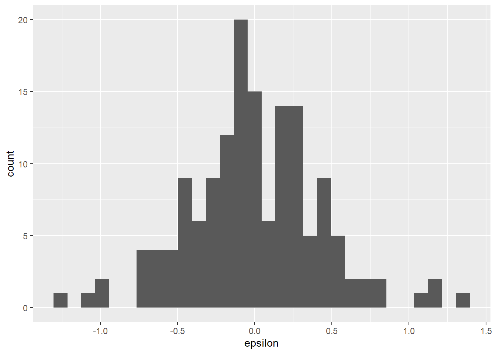
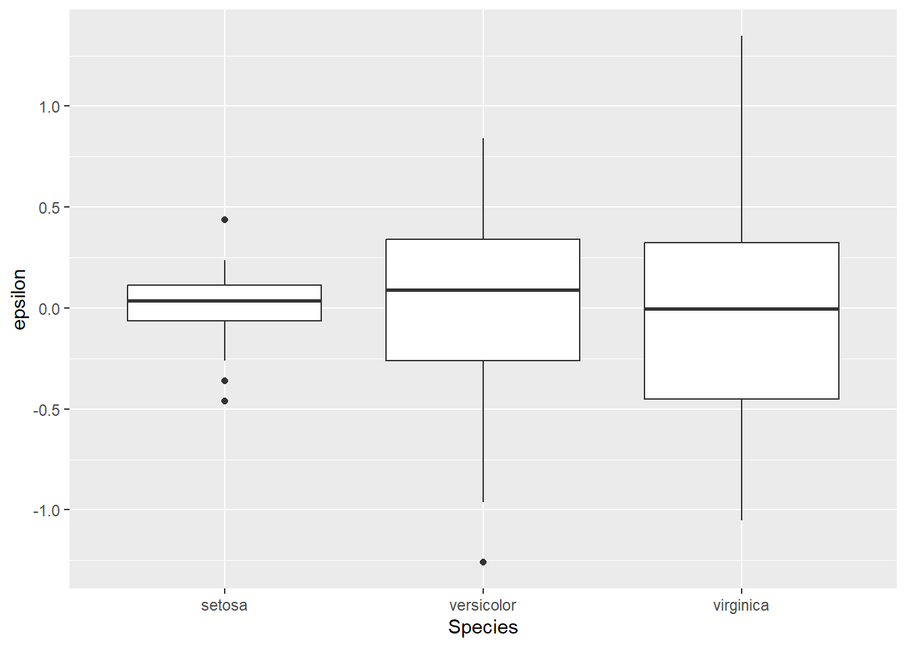
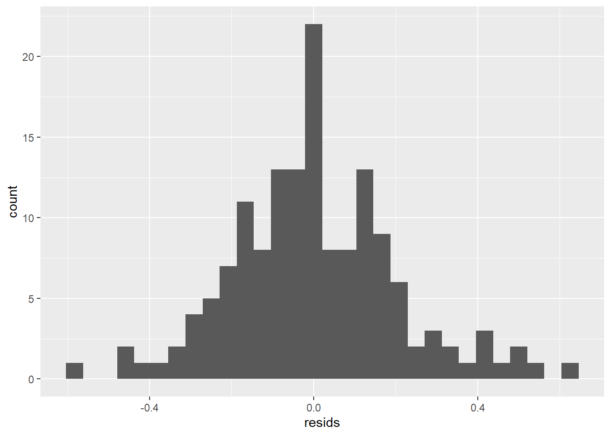
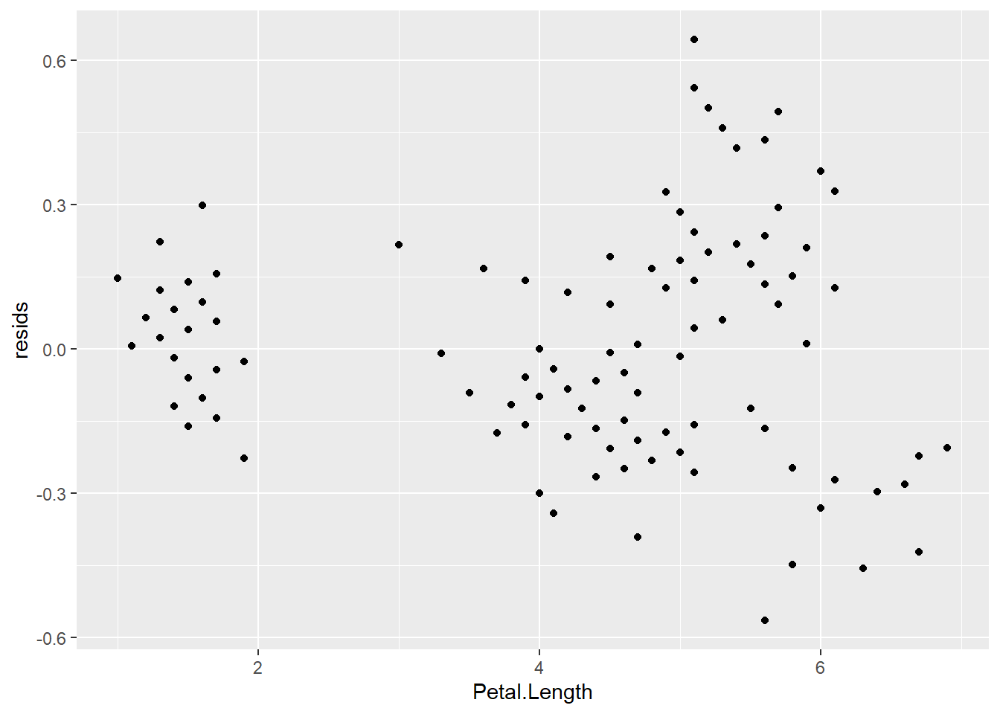
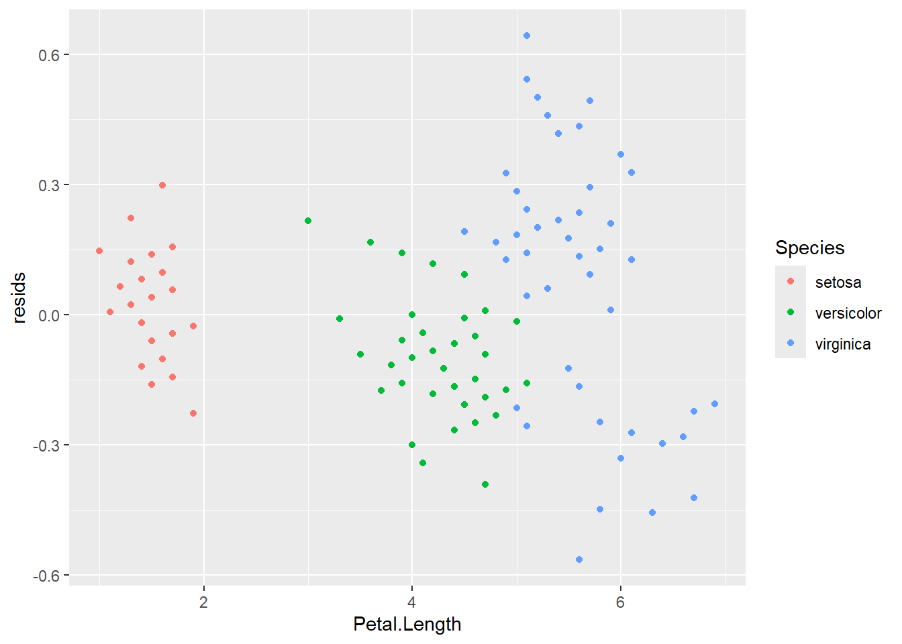
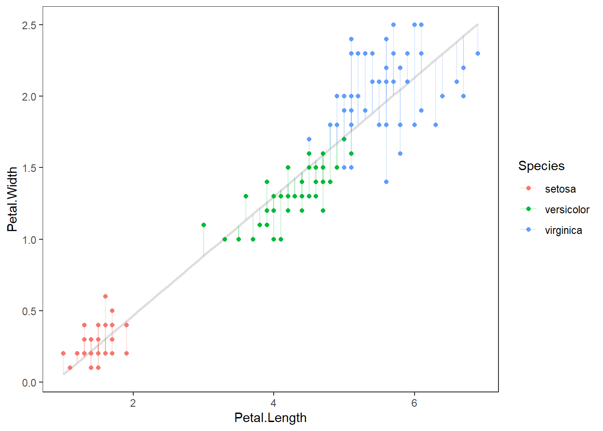

<!DOCTYPE html>
<html lang="" xml:lang="">
<head>

  <meta charset="utf-8" />
  <meta http-equiv="X-UA-Compatible" content="IE=edge" />
  <title>9.3 WTF is a residuals? | The Worst Stats Text eveR</title>
  <meta name="description" content="9.3 WTF is a residuals? | The Worst Stats Text eveR" />
  <meta name="generator" content="bookdown 0.42 and GitBook 2.6.7" />

  <meta property="og:title" content="9.3 WTF is a residuals? | The Worst Stats Text eveR" />
  <meta property="og:type" content="book" />
  
  
  

  <meta name="twitter:card" content="summary" />
  <meta name="twitter:title" content="9.3 WTF is a residuals? | The Worst Stats Text eveR" />
  
  
  

<meta name="author" content="Dan Stich" />


  <meta name="viewport" content="width=device-width, initial-scale=1" />
  <meta name="apple-mobile-web-app-capable" content="yes" />
  <meta name="apple-mobile-web-app-status-bar-style" content="black" />
  
  
<link rel="prev" href="9.2-assumptions-of-linear-models.html"/>
<link rel="next" href="9.4-the-turtle-problem.html"/>
<script src="libs/jquery-3.6.0/jquery-3.6.0.min.js"></script>
<script src="https://cdn.jsdelivr.net/npm/fuse.js@6.4.6/dist/fuse.min.js"></script>
<link href="libs/gitbook-2.6.7/css/style.css" rel="stylesheet" />
<link href="libs/gitbook-2.6.7/css/plugin-table.css" rel="stylesheet" />
<link href="libs/gitbook-2.6.7/css/plugin-bookdown.css" rel="stylesheet" />
<link href="libs/gitbook-2.6.7/css/plugin-highlight.css" rel="stylesheet" />
<link href="libs/gitbook-2.6.7/css/plugin-search.css" rel="stylesheet" />
<link href="libs/gitbook-2.6.7/css/plugin-fontsettings.css" rel="stylesheet" />
<link href="libs/gitbook-2.6.7/css/plugin-clipboard.css" rel="stylesheet" />


<link href="libs/anchor-sections-1.1.0/anchor-sections.css" rel="stylesheet" />
<link href="libs/anchor-sections-1.1.0/anchor-sections-hash.css" rel="stylesheet" />
<script src="libs/anchor-sections-1.1.0/anchor-sections.js"></script>
<html>

<head>
<base target="_blank">
</head>

<body>

</body>
</html>


<style type="text/css">
pre > code.sourceCode { white-space: pre; position: relative; }
pre > code.sourceCode > span { line-height: 1.25; }
pre > code.sourceCode > span:empty { height: 1.2em; }
.sourceCode { overflow: visible; }
code.sourceCode > span { color: inherit; text-decoration: inherit; }
pre.sourceCode { margin: 0; }
@media screen {
div.sourceCode { overflow: auto; }
}
@media print {
pre > code.sourceCode { white-space: pre-wrap; }
pre > code.sourceCode > span { display: inline-block; text-indent: -5em; padding-left: 5em; }
}
pre.numberSource code
  { counter-reset: source-line 0; }
pre.numberSource code > span
  { position: relative; left: -4em; counter-increment: source-line; }
pre.numberSource code > span > a:first-child::before
  { content: counter(source-line);
    position: relative; left: -1em; text-align: right; vertical-align: baseline;
    border: none; display: inline-block;
    -webkit-touch-callout: none; -webkit-user-select: none;
    -khtml-user-select: none; -moz-user-select: none;
    -ms-user-select: none; user-select: none;
    padding: 0 4px; width: 4em;
    color: #aaaaaa;
  }
pre.numberSource { margin-left: 3em; border-left: 1px solid #aaaaaa;  padding-left: 4px; }
div.sourceCode
  {   }
@media screen {
pre > code.sourceCode > span > a:first-child::before { text-decoration: underline; }
}
code span.al { color: #ff0000; font-weight: bold; } /* Alert */
code span.an { color: #60a0b0; font-weight: bold; font-style: italic; } /* Annotation */
code span.at { color: #7d9029; } /* Attribute */
code span.bn { color: #40a070; } /* BaseN */
code span.bu { color: #008000; } /* BuiltIn */
code span.cf { color: #007020; font-weight: bold; } /* ControlFlow */
code span.ch { color: #4070a0; } /* Char */
code span.cn { color: #880000; } /* Constant */
code span.co { color: #60a0b0; font-style: italic; } /* Comment */
code span.cv { color: #60a0b0; font-weight: bold; font-style: italic; } /* CommentVar */
code span.do { color: #ba2121; font-style: italic; } /* Documentation */
code span.dt { color: #902000; } /* DataType */
code span.dv { color: #40a070; } /* DecVal */
code span.er { color: #ff0000; font-weight: bold; } /* Error */
code span.ex { } /* Extension */
code span.fl { color: #40a070; } /* Float */
code span.fu { color: #06287e; } /* Function */
code span.im { color: #008000; font-weight: bold; } /* Import */
code span.in { color: #60a0b0; font-weight: bold; font-style: italic; } /* Information */
code span.kw { color: #007020; font-weight: bold; } /* Keyword */
code span.op { color: #666666; } /* Operator */
code span.ot { color: #007020; } /* Other */
code span.pp { color: #bc7a00; } /* Preprocessor */
code span.sc { color: #4070a0; } /* SpecialChar */
code span.ss { color: #bb6688; } /* SpecialString */
code span.st { color: #4070a0; } /* String */
code span.va { color: #19177c; } /* Variable */
code span.vs { color: #4070a0; } /* VerbatimString */
code span.wa { color: #60a0b0; font-weight: bold; font-style: italic; } /* Warning */
</style>

<style type="text/css">
  
  div.hanging-indent{margin-left: 1.5em; text-indent: -1.5em;}
</style>

<link rel="stylesheet" href="style.css" type="text/css" />
</head>

<body>


  <div class="book without-animation with-summary font-size-2 font-family-1" data-basepath=".">

    <div class="book-summary">
      <nav role="navigation">

<ul class="summary">
<li><a href="./">The Worst Stats Text eveR</a></li>

<li class="divider"></li>
<li class="chapter" data-level="" data-path="index.html"><a href="index.html"><i class="fa fa-check"></i>The Worst Stats Text eveR</a></li>
<li class="chapter" data-level="" data-path="preface.html"><a href="preface.html"><i class="fa fa-check"></i>Preface</a></li>
<li class="chapter" data-level="" data-path="author.html"><a href="author.html"><i class="fa fa-check"></i>About the author</a></li>
<li class="chapter" data-level="1" data-path="1-Chapter1.html"><a href="1-Chapter1.html"><i class="fa fa-check"></i><b>1</b> Introduction to programming in R</a>
<ul>
<li class="chapter" data-level="1.1" data-path="1.1-what-is-r.html"><a href="1.1-what-is-r.html"><i class="fa fa-check"></i><b>1.1</b> What is R?</a></li>
<li class="chapter" data-level="1.2" data-path="1.2-why-should-i-use-r.html"><a href="1.2-why-should-i-use-r.html"><i class="fa fa-check"></i><b>1.2</b> Why should I use R?</a></li>
<li class="chapter" data-level="1.3" data-path="1.3-where-do-i-start.html"><a href="1.3-where-do-i-start.html"><i class="fa fa-check"></i><b>1.3</b> Where do I start?</a></li>
<li class="chapter" data-level="1.4" data-path="1.4-programming-conventions.html"><a href="1.4-programming-conventions.html"><i class="fa fa-check"></i><b>1.4</b> Programming conventions</a>
<ul>
<li class="chapter" data-level="" data-path="1.4-programming-conventions.html"><a href="1.4-programming-conventions.html#style"><i class="fa fa-check"></i>Style and organization</a></li>
<li class="chapter" data-level="" data-path="1.4-programming-conventions.html"><a href="1.4-programming-conventions.html#tips"><i class="fa fa-check"></i>Some handy coding tips</a></li>
<li class="chapter" data-level="" data-path="1.4-programming-conventions.html"><a href="1.4-programming-conventions.html#rules"><i class="fa fa-check"></i>Stricter R programming rules</a></li>
</ul></li>
<li class="chapter" data-level="1.5" data-path="1.5-next1.html"><a href="1.5-next1.html"><i class="fa fa-check"></i><b>1.5</b> Next steps</a></li>
</ul></li>
<li class="chapter" data-level="2" data-path="2-Chapter2.html"><a href="2-Chapter2.html"><i class="fa fa-check"></i><b>2</b> Data structures</a>
<ul>
<li class="chapter" data-level="2.1" data-path="2.1-vectors.html"><a href="2.1-vectors.html"><i class="fa fa-check"></i><b>2.1</b> Vectors</a>
<ul>
<li class="chapter" data-level="" data-path="2.1-vectors.html"><a href="2.1-vectors.html#nums"><i class="fa fa-check"></i>Integers and numerics</a></li>
<li class="chapter" data-level="" data-path="2.1-vectors.html"><a href="2.1-vectors.html#strings"><i class="fa fa-check"></i>Characters and factors</a></li>
<li class="chapter" data-level="" data-path="2.1-vectors.html"><a href="2.1-vectors.html#logicals"><i class="fa fa-check"></i>Logical vectors</a></li>
</ul></li>
<li class="chapter" data-level="2.2" data-path="2.2-operations.html"><a href="2.2-operations.html"><i class="fa fa-check"></i><b>2.2</b> Vector operations</a></li>
<li class="chapter" data-level="2.3" data-path="2.3-matrices.html"><a href="2.3-matrices.html"><i class="fa fa-check"></i><b>2.3</b> Matrices</a></li>
<li class="chapter" data-level="2.4" data-path="2.4-dataframes.html"><a href="2.4-dataframes.html"><i class="fa fa-check"></i><b>2.4</b> Dataframes</a></li>
<li class="chapter" data-level="2.5" data-path="2.5-lists.html"><a href="2.5-lists.html"><i class="fa fa-check"></i><b>2.5</b> Lists</a></li>
<li class="chapter" data-level="2.6" data-path="2.6-next2.html"><a href="2.6-next2.html"><i class="fa fa-check"></i><b>2.6</b> Next steps</a></li>
</ul></li>
<li class="chapter" data-level="3" data-path="3-Chapter3.html"><a href="3-Chapter3.html"><i class="fa fa-check"></i><b>3</b> Working with data</a>
<ul>
<li class="chapter" data-level="3.1" data-path="3.1-data-read.html"><a href="3.1-data-read.html"><i class="fa fa-check"></i><b>3.1</b> Data read</a></li>
<li class="chapter" data-level="3.2" data-path="3.2-quick-data-summaries.html"><a href="3.2-quick-data-summaries.html"><i class="fa fa-check"></i><b>3.2</b> Quick data summaries</a></li>
<li class="chapter" data-level="3.3" data-path="3.3-subsetting-and-selecting-data.html"><a href="3.3-subsetting-and-selecting-data.html"><i class="fa fa-check"></i><b>3.3</b> Subsetting and selecting data</a>
<ul>
<li class="chapter" data-level="3.3.1" data-path="3.3-subsetting-and-selecting-data.html"><a href="3.3-subsetting-and-selecting-data.html#manual-subsets-and-selections"><i class="fa fa-check"></i><b>3.3.1</b> Manual subsets and selections</a></li>
<li class="chapter" data-level="3.3.2" data-path="3.3-subsetting-and-selecting-data.html"><a href="3.3-subsetting-and-selecting-data.html#subsetting-and-summaries-in-base-r"><i class="fa fa-check"></i><b>3.3.2</b> Subsetting and summaries in base R</a></li>
<li class="chapter" data-level="3.3.3" data-path="3.3-subsetting-and-selecting-data.html"><a href="3.3-subsetting-and-selecting-data.html#tidyverse"><i class="fa fa-check"></i><b>3.3.3</b> Subsetting and summaries in the tidyverse</a></li>
</ul></li>
<li class="chapter" data-level="3.4" data-path="3.4-better-data-summaries.html"><a href="3.4-better-data-summaries.html"><i class="fa fa-check"></i><b>3.4</b> Better data summaries</a></li>
<li class="chapter" data-level="3.5" data-path="3.5-creating-new-variables.html"><a href="3.5-creating-new-variables.html"><i class="fa fa-check"></i><b>3.5</b> Creating new variables</a></li>
<li class="chapter" data-level="3.6" data-path="3.6-data-simulation.html"><a href="3.6-data-simulation.html"><i class="fa fa-check"></i><b>3.6</b> Data simulation</a>
<ul>
<li class="chapter" data-level="3.6.1" data-path="3.6-data-simulation.html"><a href="3.6-data-simulation.html#random-sub-samples-from-a-dataset"><i class="fa fa-check"></i><b>3.6.1</b> Random sub-samples from a dataset</a></li>
<li class="chapter" data-level="3.6.2" data-path="3.6-data-simulation.html"><a href="3.6-data-simulation.html#stochastic"><i class="fa fa-check"></i><b>3.6.2</b> Stochastic simulation</a></li>
</ul></li>
<li class="chapter" data-level="3.7" data-path="3.7-next3.html"><a href="3.7-next3.html"><i class="fa fa-check"></i><b>3.7</b> Next steps</a></li>
</ul></li>
<li class="chapter" data-level="4" data-path="4-Chapter4.html"><a href="4-Chapter4.html"><i class="fa fa-check"></i><b>4</b> Plotting and graphics</a>
<ul>
<li class="chapter" data-level="4.1" data-path="4.1-plots-matter-as-much-as-stats.html"><a href="4.1-plots-matter-as-much-as-stats.html"><i class="fa fa-check"></i><b>4.1</b> Plots matter as much as stats</a></li>
<li class="chapter" data-level="4.2" data-path="4.2-base-graphics.html"><a href="4.2-base-graphics.html"><i class="fa fa-check"></i><b>4.2</b> Plotting with base R</a>
<ul>
<li class="chapter" data-level="4.2.1" data-path="4.2-base-graphics.html"><a href="4.2-base-graphics.html#histograms"><i class="fa fa-check"></i><b>4.2.1</b> Histograms</a></li>
<li class="chapter" data-level="4.2.2" data-path="4.2-base-graphics.html"><a href="4.2-base-graphics.html#scatterplots"><i class="fa fa-check"></i><b>4.2.2</b> Scatterplots</a></li>
<li class="chapter" data-level="4.2.3" data-path="4.2-base-graphics.html"><a href="4.2-base-graphics.html#lines"><i class="fa fa-check"></i><b>4.2.3</b> Lines</a></li>
<li class="chapter" data-level="4.2.4" data-path="4.2-base-graphics.html"><a href="4.2-base-graphics.html#boxplots"><i class="fa fa-check"></i><b>4.2.4</b> Boxplots</a></li>
</ul></li>
<li class="chapter" data-level="4.3" data-path="4.3-plotting-with-ggplot2.html"><a href="4.3-plotting-with-ggplot2.html"><i class="fa fa-check"></i><b>4.3</b> Plotting with <code>ggplot2</code></a>
<ul>
<li class="chapter" data-level="4.3.1" data-path="4.3-plotting-with-ggplot2.html"><a href="4.3-plotting-with-ggplot2.html#gghists"><i class="fa fa-check"></i><b>4.3.1</b> Histograms</a></li>
<li class="chapter" data-level="4.3.2" data-path="4.3-plotting-with-ggplot2.html"><a href="4.3-plotting-with-ggplot2.html#ggscatter"><i class="fa fa-check"></i><b>4.3.2</b> Scatter plots</a></li>
<li class="chapter" data-level="4.3.3" data-path="4.3-plotting-with-ggplot2.html"><a href="4.3-plotting-with-ggplot2.html#gglines"><i class="fa fa-check"></i><b>4.3.3</b> Lines</a></li>
<li class="chapter" data-level="4.3.4" data-path="4.3-plotting-with-ggplot2.html"><a href="4.3-plotting-with-ggplot2.html#ggboxplots"><i class="fa fa-check"></i><b>4.3.4</b> Boxplots and</a></li>
</ul></li>
<li class="chapter" data-level="4.4" data-path="4.4-next4.html"><a href="4.4-next4.html"><i class="fa fa-check"></i><b>4.4</b> Next steps</a></li>
</ul></li>
<li class="chapter" data-level="5" data-path="5-Chapter5.html"><a href="5-Chapter5.html"><i class="fa fa-check"></i><b>5</b> Sampling distributions in R</a>
<ul>
<li class="chapter" data-level="5.1" data-path="5.1-what-are-sampling-distributions.html"><a href="5.1-what-are-sampling-distributions.html"><i class="fa fa-check"></i><b>5.1</b> What are sampling distributions?</a></li>
<li class="chapter" data-level="5.2" data-path="5.2-probability-distributions-in-r.html"><a href="5.2-probability-distributions-in-r.html"><i class="fa fa-check"></i><b>5.2</b> Probability distributions in R</a></li>
<li class="chapter" data-level="5.3" data-path="5.3-exponential-family.html"><a href="5.3-exponential-family.html"><i class="fa fa-check"></i><b>5.3</b> Exponential family</a></li>
<li class="chapter" data-level="5.4" data-path="5.4-continuous-distributions.html"><a href="5.4-continuous-distributions.html"><i class="fa fa-check"></i><b>5.4</b> Continuous distributions</a>
<ul>
<li class="chapter" data-level="5.4.1" data-path="5.4-continuous-distributions.html"><a href="5.4-continuous-distributions.html#the-lognormal-distribution"><i class="fa fa-check"></i><b>5.4.1</b> The lognormal distribution</a></li>
<li class="chapter" data-level="5.4.2" data-path="5.4-continuous-distributions.html"><a href="5.4-continuous-distributions.html#the-beta-distribution"><i class="fa fa-check"></i><b>5.4.2</b> The beta distribution</a></li>
</ul></li>
<li class="chapter" data-level="5.5" data-path="5.5-discrete-distributions.html"><a href="5.5-discrete-distributions.html"><i class="fa fa-check"></i><b>5.5</b> Discrete distributions</a>
<ul>
<li class="chapter" data-level="5.5.1" data-path="5.5-discrete-distributions.html"><a href="5.5-discrete-distributions.html#bernoulli"><i class="fa fa-check"></i><b>5.5.1</b> Bernoulli</a></li>
<li class="chapter" data-level="5.5.2" data-path="5.5-discrete-distributions.html"><a href="5.5-discrete-distributions.html#binomial"><i class="fa fa-check"></i><b>5.5.2</b> Binomial</a></li>
<li class="chapter" data-level="5.5.3" data-path="5.5-discrete-distributions.html"><a href="5.5-discrete-distributions.html#multinomial"><i class="fa fa-check"></i><b>5.5.3</b> Multinomial</a></li>
<li class="chapter" data-level="5.5.4" data-path="5.5-discrete-distributions.html"><a href="5.5-discrete-distributions.html#poisson"><i class="fa fa-check"></i><b>5.5.4</b> Poisson</a></li>
<li class="chapter" data-level="5.5.5" data-path="5.5-discrete-distributions.html"><a href="5.5-discrete-distributions.html#the-negative-binomial-distribution"><i class="fa fa-check"></i><b>5.5.5</b> The negative binomial distribution</a></li>
</ul></li>
<li class="chapter" data-level="5.6" data-path="5.6-sample-statistics.html"><a href="5.6-sample-statistics.html"><i class="fa fa-check"></i><b>5.6</b> Sample statistics</a>
<ul>
<li class="chapter" data-level="5.6.1" data-path="5.6-sample-statistics.html"><a href="5.6-sample-statistics.html#moments-about-the-mean"><i class="fa fa-check"></i><b>5.6.1</b> Moments about the mean</a></li>
<li class="chapter" data-level="5.6.2" data-path="5.6-sample-statistics.html"><a href="5.6-sample-statistics.html#estimating-parameters-of-the-normal-distribution-from-a-sample"><i class="fa fa-check"></i><b>5.6.2</b> Estimating parameters of the normal distribution from a sample</a></li>
<li class="chapter" data-level="5.6.3" data-path="5.6-sample-statistics.html"><a href="5.6-sample-statistics.html#quantiles-and-other-descriptive-statistics"><i class="fa fa-check"></i><b>5.6.3</b> Quantiles and other descriptive statistics</a></li>
</ul></li>
<li class="chapter" data-level="5.7" data-path="5.7-next5.html"><a href="5.7-next5.html"><i class="fa fa-check"></i><b>5.7</b> Next steps</a></li>
</ul></li>
<li class="chapter" data-level="6" data-path="6-Chapter6.html"><a href="6-Chapter6.html"><i class="fa fa-check"></i><b>6</b> Inferential statistics</a>
<ul>
<li class="chapter" data-level="6.1" data-path="6.1-one-sample-tests.html"><a href="6.1-one-sample-tests.html"><i class="fa fa-check"></i><b>6.1</b> One-sample tests</a>
<ul>
<li class="chapter" data-level="6.1.1" data-path="6.1-one-sample-tests.html"><a href="6.1-one-sample-tests.html#one-sample-t-test"><i class="fa fa-check"></i><b>6.1.1</b> One sample t-test</a></li>
<li class="chapter" data-level="6.1.2" data-path="6.1-one-sample-tests.html"><a href="6.1-one-sample-tests.html#wilcox-test"><i class="fa fa-check"></i><b>6.1.2</b> Wilcox test</a></li>
</ul></li>
<li class="chapter" data-level="6.2" data-path="6.2-two-sample-tests.html"><a href="6.2-two-sample-tests.html"><i class="fa fa-check"></i><b>6.2</b> Two-sample tests</a>
<ul>
<li class="chapter" data-level="6.2.1" data-path="6.2-two-sample-tests.html"><a href="6.2-two-sample-tests.html#the-two-sample-t-test"><i class="fa fa-check"></i><b>6.2.1</b> The two-sample t-test</a></li>
<li class="chapter" data-level="6.2.2" data-path="6.2-two-sample-tests.html"><a href="6.2-two-sample-tests.html#two-sample-wilcox-test"><i class="fa fa-check"></i><b>6.2.2</b> Two-sample Wilcox test</a></li>
<li class="chapter" data-level="6.2.3" data-path="6.2-two-sample-tests.html"><a href="6.2-two-sample-tests.html#presenting-your-results"><i class="fa fa-check"></i><b>6.2.3</b> Presenting your results</a></li>
</ul></li>
<li class="chapter" data-level="6.3" data-path="6.3-frequency-analysis.html"><a href="6.3-frequency-analysis.html"><i class="fa fa-check"></i><b>6.3</b> Frequency analysis</a>
<ul>
<li class="chapter" data-level="6.3.1" data-path="6.3-frequency-analysis.html"><a href="6.3-frequency-analysis.html#worked-example"><i class="fa fa-check"></i><b>6.3.1</b> Worked example</a></li>
</ul></li>
<li class="chapter" data-level="6.4" data-path="6.4-next6.html"><a href="6.4-next6.html"><i class="fa fa-check"></i><b>6.4</b> Next steps</a></li>
</ul></li>
<li class="chapter" data-level="7" data-path="7-Chapter7.html"><a href="7-Chapter7.html"><i class="fa fa-check"></i><b>7</b> Linear models</a>
<ul>
<li class="chapter" data-level="7.1" data-path="7.1-anova.html"><a href="7.1-anova.html"><i class="fa fa-check"></i><b>7.1</b> Analysis of variance (ANOVA)</a>
<ul>
<li class="chapter" data-level="7.1.1" data-path="7.1-anova.html"><a href="7.1-anova.html#one-way"><i class="fa fa-check"></i><b>7.1.1</b> One-way analysis of variance</a></li>
<li class="chapter" data-level="7.1.2" data-path="7.1-anova.html"><a href="7.1-anova.html#twon-way-anova"><i class="fa fa-check"></i><b>7.1.2</b> Two(<em>n</em>)-way ANOVA</a></li>
</ul></li>
<li class="chapter" data-level="7.2" data-path="7.2-simple-linear-regression.html"><a href="7.2-simple-linear-regression.html"><i class="fa fa-check"></i><b>7.2</b> Simple linear regression</a>
<ul>
<li class="chapter" data-level="7.2.1" data-path="7.2-simple-linear-regression.html"><a href="7.2-simple-linear-regression.html#simple-linear-regression-1"><i class="fa fa-check"></i><b>7.2.1</b> Simple linear regression</a></li>
</ul></li>
<li class="chapter" data-level="7.3" data-path="7.3-multiple-linear-regression.html"><a href="7.3-multiple-linear-regression.html"><i class="fa fa-check"></i><b>7.3</b> Multiple linear regression</a></li>
<li class="chapter" data-level="7.4" data-path="7.4-next7.html"><a href="7.4-next7.html"><i class="fa fa-check"></i><b>7.4</b> Next steps</a></li>
</ul></li>
<li class="chapter" data-level="8" data-path="8-Chapter8.html"><a href="8-Chapter8.html"><i class="fa fa-check"></i><b>8</b> General linear models</a>
<ul>
<li class="chapter" data-level="8.1" data-path="8.1-analysis-of-covariance-ancova.html"><a href="8.1-analysis-of-covariance-ancova.html"><i class="fa fa-check"></i><b>8.1</b> Analysis of covariance (ANCOVA)</a></li>
<li class="chapter" data-level="8.2" data-path="8.2-motivation.html"><a href="8.2-motivation.html"><i class="fa fa-check"></i><b>8.2</b> Motivation</a></li>
<li class="chapter" data-level="8.3" data-path="8.3-data.html"><a href="8.3-data.html"><i class="fa fa-check"></i><b>8.3</b> Data</a></li>
<li class="chapter" data-level="8.4" data-path="8.4-analysis.html"><a href="8.4-analysis.html"><i class="fa fa-check"></i><b>8.4</b> Analysis</a></li>
<li class="chapter" data-level="8.5" data-path="8.5-predictions.html"><a href="8.5-predictions.html"><i class="fa fa-check"></i><b>8.5</b> Predictions</a></li>
<li class="chapter" data-level="8.6" data-path="8.6-next8.html"><a href="8.6-next8.html"><i class="fa fa-check"></i><b>8.6</b> Next steps</a></li>
</ul></li>
<li class="chapter" data-level="9" data-path="9-Chapter9.html"><a href="9-Chapter9.html"><i class="fa fa-check"></i><b>9</b> Assumptions of linear models</a>
<ul>
<li class="chapter" data-level="9.1" data-path="9.1-intro9.html"><a href="9.1-intro9.html"><i class="fa fa-check"></i><b>9.1</b> Introduction</a></li>
<li class="chapter" data-level="9.2" data-path="9.2-assumptions-of-linear-models.html"><a href="9.2-assumptions-of-linear-models.html"><i class="fa fa-check"></i><b>9.2</b> Assumptions of linear models</a></li>
<li class="chapter" data-level="9.3" data-path="9.3-ughmath.html"><a href="9.3-ughmath.html"><i class="fa fa-check"></i><b>9.3</b> WTF is a residuals?</a>
<ul>
<li class="chapter" data-level="9.3.1" data-path="9.3-ughmath.html"><a href="9.3-ughmath.html#residuals-in-anova"><i class="fa fa-check"></i><b>9.3.1</b> Residuals in ANOVA</a></li>
<li class="chapter" data-level="9.3.2" data-path="9.3-ughmath.html"><a href="9.3-ughmath.html#residuals-in-linear-regression"><i class="fa fa-check"></i><b>9.3.2</b> Residuals in linear regression</a></li>
</ul></li>
<li class="chapter" data-level="9.4" data-path="9.4-the-turtle-problem.html"><a href="9.4-the-turtle-problem.html"><i class="fa fa-check"></i><b>9.4</b> The turtle problem</a></li>
<li class="chapter" data-level="9.5" data-path="9.5-data-exploration.html"><a href="9.5-data-exploration.html"><i class="fa fa-check"></i><b>9.5</b> Data exploration</a>
<ul>
<li class="chapter" data-level="9.5.1" data-path="9.5-data-exploration.html"><a href="9.5-data-exploration.html#independence-of-observations"><i class="fa fa-check"></i><b>9.5.1</b> Independence of observations</a></li>
<li class="chapter" data-level="9.5.2" data-path="9.5-data-exploration.html"><a href="9.5-data-exploration.html#normality-1"><i class="fa fa-check"></i><b>9.5.2</b> Normality</a></li>
<li class="chapter" data-level="9.5.3" data-path="9.5-data-exploration.html"><a href="9.5-data-exploration.html#homogeneity-of-variances"><i class="fa fa-check"></i><b>9.5.3</b> Homogeneity of variances</a></li>
</ul></li>
<li class="chapter" data-level="9.6" data-path="9.6-anova-diagnostics.html"><a href="9.6-anova-diagnostics.html"><i class="fa fa-check"></i><b>9.6</b> ANOVA Diagnostics</a></li>
<li class="chapter" data-level="9.7" data-path="9.7-linear-regression-diagnostics.html"><a href="9.7-linear-regression-diagnostics.html"><i class="fa fa-check"></i><b>9.7</b> Linear regression diagnostics</a></li>
<li class="chapter" data-level="9.8" data-path="9.8-next9.html"><a href="9.8-next9.html"><i class="fa fa-check"></i><b>9.8</b> Next steps</a></li>
</ul></li>
<li class="chapter" data-level="10" data-path="10-Chapter10.html"><a href="10-Chapter10.html"><i class="fa fa-check"></i><b>10</b> Communicating effect sizes</a>
<ul>
<li class="chapter" data-level="10.1" data-path="10.1-one-way-anova.html"><a href="10.1-one-way-anova.html"><i class="fa fa-check"></i><b>10.1</b> One-way ANOVA</a>
<ul>
<li class="chapter" data-level="10.1.1" data-path="10.1-one-way-anova.html"><a href="10.1-one-way-anova.html#unifying-the-linear-model"><i class="fa fa-check"></i><b>10.1.1</b> Unifying the linear model</a></li>
<li class="chapter" data-level="10.1.2" data-path="10.1-one-way-anova.html"><a href="10.1-one-way-anova.html#the-model-matrix"><i class="fa fa-check"></i><b>10.1.2</b> The model matrix</a></li>
<li class="chapter" data-level="10.1.3" data-path="10.1-one-way-anova.html"><a href="10.1-one-way-anova.html#prediction"><i class="fa fa-check"></i><b>10.1.3</b> Prediction</a></li>
<li class="chapter" data-level="10.1.4" data-path="10.1-one-way-anova.html"><a href="10.1-one-way-anova.html#plotting"><i class="fa fa-check"></i><b>10.1.4</b> Plotting</a></li>
</ul></li>
<li class="chapter" data-level="10.2" data-path="10.2-two-way-anova.html"><a href="10.2-two-way-anova.html"><i class="fa fa-check"></i><b>10.2</b> Two-way ANOVA</a>
<ul>
<li class="chapter" data-level="10.2.1" data-path="10.2-two-way-anova.html"><a href="10.2-two-way-anova.html#main-effects-10"><i class="fa fa-check"></i><b>10.2.1</b> Main effects model</a></li>
<li class="chapter" data-level="10.2.2" data-path="10.2-two-way-anova.html"><a href="10.2-two-way-anova.html#interactions"><i class="fa fa-check"></i><b>10.2.2</b> Interactions</a></li>
</ul></li>
<li class="chapter" data-level="10.3" data-path="10.3-linear-regression.html"><a href="10.3-linear-regression.html"><i class="fa fa-check"></i><b>10.3</b> Linear regression</a>
<ul>
<li class="chapter" data-level="10.3.1" data-path="10.3-linear-regression.html"><a href="10.3-linear-regression.html#prediction-1"><i class="fa fa-check"></i><b>10.3.1</b> Prediction</a></li>
<li class="chapter" data-level="10.3.2" data-path="10.3-linear-regression.html"><a href="10.3-linear-regression.html#plotting-1"><i class="fa fa-check"></i><b>10.3.2</b> Plotting</a></li>
</ul></li>
<li class="chapter" data-level="10.4" data-path="10.4-ancova.html"><a href="10.4-ancova.html"><i class="fa fa-check"></i><b>10.4</b> ANCOVA</a>
<ul>
<li class="chapter" data-level="10.4.1" data-path="10.4-ancova.html"><a href="10.4-ancova.html#prediction-2"><i class="fa fa-check"></i><b>10.4.1</b> Prediction</a></li>
<li class="chapter" data-level="10.4.2" data-path="10.4-ancova.html"><a href="10.4-ancova.html#plotting-2"><i class="fa fa-check"></i><b>10.4.2</b> Plotting</a></li>
</ul></li>
<li class="chapter" data-level="10.5" data-path="10.5-next10.html"><a href="10.5-next10.html"><i class="fa fa-check"></i><b>10.5</b> Next steps</a></li>
</ul></li>
<li class="chapter" data-level="11" data-path="11-Chapter11.html"><a href="11-Chapter11.html"><i class="fa fa-check"></i><b>11</b> Model selection</a>
<ul>
<li class="chapter" data-level="11.1" data-path="11.1-intro11.html"><a href="11.1-intro11.html"><i class="fa fa-check"></i><b>11.1</b> Introduction</a></li>
<li class="chapter" data-level="11.2" data-path="11.2-model-selection-tools.html"><a href="11.2-model-selection-tools.html"><i class="fa fa-check"></i><b>11.2</b> Model selection tools</a></li>
<li class="chapter" data-level="11.3" data-path="11.3-all-subsets.html"><a href="11.3-all-subsets.html"><i class="fa fa-check"></i><b>11.3</b> All subsets</a></li>
<li class="chapter" data-level="11.4" data-path="11.4-stepwise.html"><a href="11.4-stepwise.html"><i class="fa fa-check"></i><b>11.4</b> Stepwise selection</a>
<ul>
<li class="chapter" data-level="11.4.1" data-path="11.4-stepwise.html"><a href="11.4-stepwise.html#forward-selection"><i class="fa fa-check"></i><b>11.4.1</b> Forward selection</a></li>
</ul></li>
<li class="chapter" data-level="11.5" data-path="11.5-a-priori.html"><a href="11.5-a-priori.html"><i class="fa fa-check"></i><b>11.5</b> <em>A priori</em> selection</a>
<ul>
<li class="chapter" data-level="11.5.1" data-path="11.5-a-priori.html"><a href="11.5-a-priori.html#multi-phase-heirarchical-selection"><i class="fa fa-check"></i><b>11.5.1</b> Multi-phase (heirarchical) selection</a></li>
<li class="chapter" data-level="11.5.2" data-path="11.5-a-priori.html"><a href="11.5-a-priori.html#single-phase-selection"><i class="fa fa-check"></i><b>11.5.2</b> Single-phase selection</a></li>
<li class="chapter" data-level="11.5.3" data-path="11.5-a-priori.html"><a href="11.5-a-priori.html#tools-for-a-priori-model-selection"><i class="fa fa-check"></i><b>11.5.3</b> Tools for <em>a priori</em> model selection</a></li>
</ul></li>
<li class="chapter" data-level="11.6" data-path="11.6-model-validation.html"><a href="11.6-model-validation.html"><i class="fa fa-check"></i><b>11.6</b> Model validation</a>
<ul>
<li class="chapter" data-level="11.6.1" data-path="11.6-model-validation.html"><a href="11.6-model-validation.html#leave-one-out-cross-validation"><i class="fa fa-check"></i><b>11.6.1</b> Leave-one-out cross validation</a></li>
</ul></li>
<li class="chapter" data-level="11.7" data-path="11.7-next11.html"><a href="11.7-next11.html"><i class="fa fa-check"></i><b>11.7</b> Next steps</a></li>
</ul></li>
<li class="chapter" data-level="12" data-path="12-Chapter12.html"><a href="12-Chapter12.html"><i class="fa fa-check"></i><b>12</b> Logistic regression</a>
<ul>
<li class="chapter" data-level="12.1" data-path="12.1-intro12.html"><a href="12.1-intro12.html"><i class="fa fa-check"></i><b>12.1</b> Introduction</a></li>
<li class="chapter" data-level="12.2" data-path="12.2-Assumptions12.html"><a href="12.2-Assumptions12.html"><i class="fa fa-check"></i><b>12.2</b> Assumptions of linear models</a>
<ul>
<li class="chapter" data-level="12.2.1" data-path="12.2-Assumptions12.html"><a href="12.2-Assumptions12.html#assumption-1-normality-of-residuals"><i class="fa fa-check"></i><b>12.2.1</b> Assumption 1: normality of residuals</a></li>
<li class="chapter" data-level="12.2.2" data-path="12.2-Assumptions12.html"><a href="12.2-Assumptions12.html#assumption-2-independence-of-observations"><i class="fa fa-check"></i><b>12.2.2</b> Assumption 2: independence of observations</a></li>
<li class="chapter" data-level="12.2.3" data-path="12.2-Assumptions12.html"><a href="12.2-Assumptions12.html#assumption-3-homogeneity-of-variances"><i class="fa fa-check"></i><b>12.2.3</b> Assumption 3: homogeneity of variances</a></li>
<li class="chapter" data-level="12.2.4" data-path="12.2-Assumptions12.html"><a href="12.2-Assumptions12.html#assumption-4-linearity-and-additivity"><i class="fa fa-check"></i><b>12.2.4</b> Assumption 4: linearity and additivity</a></li>
</ul></li>
<li class="chapter" data-level="12.3" data-path="12.3-introducing-the-glm.html"><a href="12.3-introducing-the-glm.html"><i class="fa fa-check"></i><b>12.3</b> Introducing the GLM</a></li>
<li class="chapter" data-level="12.4" data-path="12.4-logistic.html"><a href="12.4-logistic.html"><i class="fa fa-check"></i><b>12.4</b> Binary (logistic) regression</a>
<ul>
<li class="chapter" data-level="12.4.1" data-path="12.4-logistic.html"><a href="12.4-logistic.html#data-explanation"><i class="fa fa-check"></i><b>12.4.1</b> Data Explanation</a></li>
<li class="chapter" data-level="12.4.2" data-path="12.4-logistic.html"><a href="12.4-logistic.html#data-analysis"><i class="fa fa-check"></i><b>12.4.2</b> Data analysis</a></li>
<li class="chapter" data-level="12.4.3" data-path="12.4-logistic.html"><a href="12.4-logistic.html#interpreting-the-results"><i class="fa fa-check"></i><b>12.4.3</b> Interpreting the results</a></li>
<li class="chapter" data-level="12.4.4" data-path="12.4-logistic.html"><a href="12.4-logistic.html#making-predictions"><i class="fa fa-check"></i><b>12.4.4</b> Making predictions</a></li>
</ul></li>
<li class="chapter" data-level="12.5" data-path="12.5-next12.html"><a href="12.5-next12.html"><i class="fa fa-check"></i><b>12.5</b> Next steps</a></li>
</ul></li>
<li class="chapter" data-level="13" data-path="13-Chapter13.html"><a href="13-Chapter13.html"><i class="fa fa-check"></i><b>13</b> GLM: Count models</a>
<ul>
<li class="chapter" data-level="13.1" data-path="13.1-intro13.html"><a href="13.1-intro13.html"><i class="fa fa-check"></i><b>13.1</b> Introduction</a></li>
<li class="chapter" data-level="13.2" data-path="13.2-poisson-13.html"><a href="13.2-poisson-13.html"><i class="fa fa-check"></i><b>13.2</b> Poisson regression</a>
<ul>
<li class="chapter" data-level="13.2.1" data-path="13.2-poisson-13.html"><a href="13.2-poisson-13.html#data-13"><i class="fa fa-check"></i><b>13.2.1</b> Data explanation</a></li>
</ul></li>
<li class="chapter" data-level="13.3" data-path="13.3-negbin.html"><a href="13.3-negbin.html"><i class="fa fa-check"></i><b>13.3</b> Negative binomial regression</a></li>
<li class="chapter" data-level="13.4" data-path="13.4-zinf-13.html"><a href="13.4-zinf-13.html"><i class="fa fa-check"></i><b>13.4</b> Zero inflation</a>
<ul>
<li class="chapter" data-level="13.4.1" data-path="13.4-zinf-13.html"><a href="13.4-zinf-13.html#predict-13"><i class="fa fa-check"></i><b>13.4.1</b> Predictions</a></li>
</ul></li>
<li class="chapter" data-level="13.5" data-path="13.5-next-13.html"><a href="13.5-next-13.html"><i class="fa fa-check"></i><b>13.5</b> Next steps</a></li>
</ul></li>
<li class="chapter" data-level="14" data-path="14-Chapter14.html"><a href="14-Chapter14.html"><i class="fa fa-check"></i><b>14</b> Linear mixed models</a>
<ul>
<li class="chapter" data-level="14.1" data-path="14.1-intro-14.html"><a href="14.1-intro-14.html"><i class="fa fa-check"></i><b>14.1</b> Introduction</a></li>
<li class="chapter" data-level="14.2" data-path="14.2-assumptions-lmm.html"><a href="14.2-assumptions-lmm.html"><i class="fa fa-check"></i><b>14.2</b> Assumptions of linear models</a>
<ul>
<li class="chapter" data-level="14.2.1" data-path="14.2-assumptions-lmm.html"><a href="14.2-assumptions-lmm.html#normality-14"><i class="fa fa-check"></i><b>14.2.1</b> Assumption 1: Normality of residuals</a></li>
<li class="chapter" data-level="14.2.2" data-path="14.2-assumptions-lmm.html"><a href="14.2-assumptions-lmm.html#independence-14"><i class="fa fa-check"></i><b>14.2.2</b> Assumption 2: Independence of observations</a></li>
<li class="chapter" data-level="14.2.3" data-path="14.2-assumptions-lmm.html"><a href="14.2-assumptions-lmm.html#homogeneity-14"><i class="fa fa-check"></i><b>14.2.3</b> Assumption 3: Homogeneity of variances</a></li>
<li class="chapter" data-level="14.2.4" data-path="14.2-assumptions-lmm.html"><a href="14.2-assumptions-lmm.html#linearity-14"><i class="fa fa-check"></i><b>14.2.4</b> Assumption 4: Linearity and additivity</a></li>
</ul></li>
<li class="chapter" data-level="14.3" data-path="14.3-linear-mixed-models.html"><a href="14.3-linear-mixed-models.html"><i class="fa fa-check"></i><b>14.3</b> Linear mixed models</a></li>
<li class="chapter" data-level="14.4" data-path="14.4-lmm-worked.html"><a href="14.4-lmm-worked.html"><i class="fa fa-check"></i><b>14.4</b> Worked example</a>
<ul>
<li class="chapter" data-level="14.4.1" data-path="14.4-lmm-worked.html"><a href="14.4-lmm-worked.html#random-intercepts-model"><i class="fa fa-check"></i><b>14.4.1</b> Random-intercepts model</a></li>
</ul></li>
<li class="chapter" data-level="14.5" data-path="14.5-next-14.html"><a href="14.5-next-14.html"><i class="fa fa-check"></i><b>14.5</b> Next steps</a></li>
</ul></li>
<li class="chapter" data-level="15" data-path="15-Chapter15.html"><a href="15-Chapter15.html"><i class="fa fa-check"></i><b>15</b> Generalized linear mixed models</a>
<ul>
<li class="chapter" data-level="15.1" data-path="15.1-intro-15.html"><a href="15.1-intro-15.html"><i class="fa fa-check"></i><b>15.1</b> Introduction</a></li>
<li class="chapter" data-level="15.2" data-path="15.2-glmm-logistic.html"><a href="15.2-glmm-logistic.html"><i class="fa fa-check"></i><b>15.2</b> Logistic regression</a>
<ul>
<li class="chapter" data-level="15.2.1" data-path="15.2-glmm-logistic.html"><a href="15.2-glmm-logistic.html#glmm-logistic-data"><i class="fa fa-check"></i><b>15.2.1</b> Data Explanation</a></li>
<li class="chapter" data-level="15.2.2" data-path="15.2-glmm-logistic.html"><a href="15.2-glmm-logistic.html#glmm-logistic-analysis"><i class="fa fa-check"></i><b>15.2.2</b> Data analysis</a></li>
<li class="chapter" data-level="15.2.3" data-path="15.2-glmm-logistic.html"><a href="15.2-glmm-logistic.html#glmm-logistic-preds"><i class="fa fa-check"></i><b>15.2.3</b> Predictions</a></li>
</ul></li>
<li class="chapter" data-level="15.3" data-path="15.3-glmm-count.html"><a href="15.3-glmm-count.html"><i class="fa fa-check"></i><b>15.3</b> Count models</a>
<ul>
<li class="chapter" data-level="15.3.1" data-path="15.3-glmm-count.html"><a href="15.3-glmm-count.html#data-explanation-glmm-count-data"><i class="fa fa-check"></i><b>15.3.1</b> Data explanation {glmm-count-data}</a></li>
<li class="chapter" data-level="15.3.2" data-path="15.3-glmm-count.html"><a href="15.3-glmm-count.html#glmm-count-analysis"><i class="fa fa-check"></i><b>15.3.2</b> Data analysis</a></li>
<li class="chapter" data-level="15.3.3" data-path="15.3-glmm-count.html"><a href="15.3-glmm-count.html#glmm-count-preds"><i class="fa fa-check"></i><b>15.3.3</b> Predictions</a></li>
</ul></li>
<li class="chapter" data-level="15.4" data-path="15.4-next-15.html"><a href="15.4-next-15.html"><i class="fa fa-check"></i><b>15.4</b> Next steps</a></li>
</ul></li>
<li class="chapter" data-level="16" data-path="16-introduction-to-bayesian-inference.html"><a href="16-introduction-to-bayesian-inference.html"><i class="fa fa-check"></i><b>16</b> Introduction to Bayesian inference</a>
<ul>
<li class="chapter" data-level="16.1" data-path="16.1-intro-16.html"><a href="16.1-intro-16.html"><i class="fa fa-check"></i><b>16.1</b> Introduction</a>
<ul>
<li class="chapter" data-level="16.1.1" data-path="16.1-intro-16.html"><a href="16.1-intro-16.html#installing-rstan"><i class="fa fa-check"></i><b>16.1.1</b> Installing RStan</a></li>
</ul></li>
<li class="chapter" data-level="16.2" data-path="16.2-intro-to-bayes-theorem.html"><a href="16.2-intro-to-bayes-theorem.html"><i class="fa fa-check"></i><b>16.2</b> Intro to Bayes Theorem</a></li>
<li class="chapter" data-level="16.3" data-path="16.3-the-prior.html"><a href="16.3-the-prior.html"><i class="fa fa-check"></i><b>16.3</b> The prior</a>
<ul>
<li class="chapter" data-level="16.3.1" data-path="16.3-the-prior.html"><a href="16.3-the-prior.html#the-hospital-example"><i class="fa fa-check"></i><b>16.3.1</b> The hospital example</a></li>
</ul></li>
<li class="chapter" data-level="16.4" data-path="16.4-the-posterior.html"><a href="16.4-the-posterior.html"><i class="fa fa-check"></i><b>16.4</b> The posterior</a></li>
<li class="chapter" data-level="16.5" data-path="16.5-worked-example-with-the-cray-data.html"><a href="16.5-worked-example-with-the-cray-data.html"><i class="fa fa-check"></i><b>16.5</b> Worked example with the Cray data</a></li>
<li class="chapter" data-level="16.6" data-path="16.6-running-a-bayesian-model-with-rstanarm.html"><a href="16.6-running-a-bayesian-model-with-rstanarm.html"><i class="fa fa-check"></i><b>16.6</b> Running a Bayesian model with <code>rstanarm</code></a>
<ul>
<li class="chapter" data-level="16.6.1" data-path="16.6-running-a-bayesian-model-with-rstanarm.html"><a href="16.6-running-a-bayesian-model-with-rstanarm.html#interpreting-the-model-summary"><i class="fa fa-check"></i><b>16.6.1</b> Interpreting the model summary</a></li>
</ul></li>
<li class="chapter" data-level="16.7" data-path="16.7-more-diagnostics.html"><a href="16.7-more-diagnostics.html"><i class="fa fa-check"></i><b>16.7</b> More diagnostics</a>
<ul>
<li class="chapter" data-level="16.7.1" data-path="16.7-more-diagnostics.html"><a href="16.7-more-diagnostics.html#trace-plots"><i class="fa fa-check"></i><b>16.7.1</b> Trace plots</a></li>
<li class="chapter" data-level="16.7.2" data-path="16.7-more-diagnostics.html"><a href="16.7-more-diagnostics.html#colinearity"><i class="fa fa-check"></i><b>16.7.2</b> Colinearity</a></li>
<li class="chapter" data-level="16.7.3" data-path="16.7-more-diagnostics.html"><a href="16.7-more-diagnostics.html#divergence"><i class="fa fa-check"></i><b>16.7.3</b> Divergence</a></li>
</ul></li>
<li class="chapter" data-level="16.8" data-path="16.8-bayesian-model-selection.html"><a href="16.8-bayesian-model-selection.html"><i class="fa fa-check"></i><b>16.8</b> Model selection</a></li>
<li class="chapter" data-level="16.9" data-path="16.9-summarizing-results.html"><a href="16.9-summarizing-results.html"><i class="fa fa-check"></i><b>16.9</b> Summarizing results</a></li>
<li class="chapter" data-level="16.10" data-path="16.10-making-predictions-1.html"><a href="16.10-making-predictions-1.html"><i class="fa fa-check"></i><b>16.10</b> Making predictions</a></li>
<li class="chapter" data-level="16.11" data-path="16.11-next-16.html"><a href="16.11-next-16.html"><i class="fa fa-check"></i><b>16.11</b> Next steps</a></li>
</ul></li>
<li class="chapter" data-level="17" data-path="17-Chapter17.html"><a href="17-Chapter17.html"><i class="fa fa-check"></i><b>17</b> Bayesian Logistic regression</a>
<ul>
<li class="chapter" data-level="17.1" data-path="17.1-intro17.html"><a href="17.1-intro17.html"><i class="fa fa-check"></i><b>17.1</b> Introduction</a></li>
<li class="chapter" data-level="17.2" data-path="17.2-logistic-17.html"><a href="17.2-logistic-17.html"><i class="fa fa-check"></i><b>17.2</b> Binary (logistic) regression</a>
<ul>
<li class="chapter" data-level="17.2.1" data-path="17.2-logistic-17.html"><a href="17.2-logistic-17.html#data-17"><i class="fa fa-check"></i><b>17.2.1</b> Data Explanation</a></li>
<li class="chapter" data-level="17.2.2" data-path="17.2-logistic-17.html"><a href="17.2-logistic-17.html#analysis-17"><i class="fa fa-check"></i><b>17.2.2</b> Data analysis</a></li>
<li class="chapter" data-level="17.2.3" data-path="17.2-logistic-17.html"><a href="17.2-logistic-17.html#interpretting-17"><i class="fa fa-check"></i><b>17.2.3</b> Interpreting the results</a></li>
<li class="chapter" data-level="17.2.4" data-path="17.2-logistic-17.html"><a href="17.2-logistic-17.html#continuous-17"><i class="fa fa-check"></i><b>17.2.4</b> Continuous effects</a></li>
<li class="chapter" data-level="17.2.5" data-path="17.2-logistic-17.html"><a href="17.2-logistic-17.html#predictions-17"><i class="fa fa-check"></i><b>17.2.5</b> Making predictions</a></li>
</ul></li>
<li class="chapter" data-level="17.3" data-path="17.3-next17.html"><a href="17.3-next17.html"><i class="fa fa-check"></i><b>17.3</b> Next steps</a></li>
</ul></li>
<li class="chapter" data-level="18" data-path="18-Chapter18.html"><a href="18-Chapter18.html"><i class="fa fa-check"></i><b>18</b> GLM: Count models</a>
<ul>
<li class="chapter" data-level="18.1" data-path="18.1-intro18.html"><a href="18.1-intro18.html"><i class="fa fa-check"></i><b>18.1</b> Introduction</a></li>
<li class="chapter" data-level="18.2" data-path="18.2-poisson-18.html"><a href="18.2-poisson-18.html"><i class="fa fa-check"></i><b>18.2</b> Poisson regression</a>
<ul>
<li class="chapter" data-level="18.2.1" data-path="18.2-poisson-18.html"><a href="18.2-poisson-18.html#data-18"><i class="fa fa-check"></i><b>18.2.1</b> Data explanation</a></li>
</ul></li>
<li class="chapter" data-level="18.3" data-path="18.3-negbin-18.html"><a href="18.3-negbin-18.html"><i class="fa fa-check"></i><b>18.3</b> Negative binomial regression</a></li>
<li class="chapter" data-level="18.4" data-path="18.4-zinfl-18.html"><a href="18.4-zinfl-18.html"><i class="fa fa-check"></i><b>18.4</b> Zero inflation</a>
<ul>
<li class="chapter" data-level="18.4.1" data-path="18.4-zinfl-18.html"><a href="18.4-zinfl-18.html#step-1-presence-absence"><i class="fa fa-check"></i><b>18.4.1</b> Step 1: Presence-absence</a></li>
<li class="chapter" data-level="18.4.2" data-path="18.4-zinfl-18.html"><a href="18.4-zinfl-18.html#step-2-counts-given-presence"><i class="fa fa-check"></i><b>18.4.2</b> Step 2: Counts given presence</a></li>
<li class="chapter" data-level="18.4.3" data-path="18.4-zinfl-18.html"><a href="18.4-zinfl-18.html#predict-counts"><i class="fa fa-check"></i><b>18.4.3</b> Predictions</a></li>
</ul></li>
<li class="chapter" data-level="18.5" data-path="18.5-next-steps.html"><a href="18.5-next-steps.html"><i class="fa fa-check"></i><b>18.5</b> Next steps</a></li>
</ul></li>
<li class="chapter" data-level="19" data-path="19-Chapter19.html"><a href="19-Chapter19.html"><i class="fa fa-check"></i><b>19</b> Bayesian hierarchical models</a>
<ul>
<li class="chapter" data-level="19.1" data-path="19.1-intro-19.html"><a href="19.1-intro-19.html"><i class="fa fa-check"></i><b>19.1</b> Introduction</a></li>
<li class="chapter" data-level="19.2" data-path="19.2-hierarchical.html"><a href="19.2-hierarchical.html"><i class="fa fa-check"></i><b>19.2</b> Bayesian hierarchical models</a></li>
<li class="chapter" data-level="19.3" data-path="19.3-worked-19.html"><a href="19.3-worked-19.html"><i class="fa fa-check"></i><b>19.3</b> Worked example</a>
<ul>
<li class="chapter" data-level="19.3.1" data-path="19.3-worked-19.html"><a href="19.3-worked-19.html#random-intercept-19"><i class="fa fa-check"></i><b>19.3.1</b> Random-intercepts model</a></li>
</ul></li>
<li class="chapter" data-level="19.4" data-path="19.4-next-19.html"><a href="19.4-next-19.html"><i class="fa fa-check"></i><b>19.4</b> Next steps</a></li>
</ul></li>
<li class="chapter" data-level="20" data-path="20-Chapter20.html"><a href="20-Chapter20.html"><i class="fa fa-check"></i><b>20</b> Bayesian hierarchical GLM</a>
<ul>
<li class="chapter" data-level="20.1" data-path="20.1-intro-20.html"><a href="20.1-intro-20.html"><i class="fa fa-check"></i><b>20.1</b> Introduction</a></li>
<li class="chapter" data-level="20.2" data-path="20.2-id_20-logistic.html"><a href="20.2-id_20-logistic.html"><i class="fa fa-check"></i><b>20.2</b> Logistic regression</a>
<ul>
<li class="chapter" data-level="20.2.1" data-path="20.2-id_20-logistic.html"><a href="20.2-id_20-logistic.html#id_20-logistic-data"><i class="fa fa-check"></i><b>20.2.1</b> Data Explanation</a></li>
<li class="chapter" data-level="20.2.2" data-path="20.2-id_20-logistic.html"><a href="20.2-id_20-logistic.html#id_20-logistic-analysis"><i class="fa fa-check"></i><b>20.2.2</b> Data analysis</a></li>
<li class="chapter" data-level="20.2.3" data-path="20.2-id_20-logistic.html"><a href="20.2-id_20-logistic.html#id_20-logistic-preds"><i class="fa fa-check"></i><b>20.2.3</b> Predictions</a></li>
</ul></li>
<li class="chapter" data-level="20.3" data-path="20.3-id_20-count.html"><a href="20.3-id_20-count.html"><i class="fa fa-check"></i><b>20.3</b> Count models</a>
<ul>
<li class="chapter" data-level="20.3.1" data-path="20.3-id_20-count.html"><a href="20.3-id_20-count.html#data-explanation-20-count-data"><i class="fa fa-check"></i><b>20.3.1</b> Data explanation {20-count-data}</a></li>
<li class="chapter" data-level="20.3.2" data-path="20.3-id_20-count.html"><a href="20.3-id_20-count.html#id_20-count-analysis"><i class="fa fa-check"></i><b>20.3.2</b> Data analysis</a></li>
<li class="chapter" data-level="20.3.3" data-path="20.3-id_20-count.html"><a href="20.3-id_20-count.html#id_20-count-preds"><i class="fa fa-check"></i><b>20.3.3</b> Predictions</a></li>
</ul></li>
<li class="chapter" data-level="20.4" data-path="20.4-next-20.html"><a href="20.4-next-20.html"><i class="fa fa-check"></i><b>20.4</b> Next steps</a></li>
</ul></li>
<li class="divider"></li>
<li><a href="https://github.com/rstudio/bookdown" target="blank">Published with bookdown</a></li>

</ul>

      </nav>
    </div>

    <div class="book-body">
      <div class="body-inner">
        <div class="book-header" role="navigation">
          <h1>
            <i class="fa fa-circle-o-notch fa-spin"></i><a href="./">The Worst Stats Text eveR</a>
          </h1>
        </div>

        <div class="page-wrapper" tabindex="-1" role="main">
          <div class="page-inner">

            <section class="normal" id="section-">
<div id="ughmath" class="section level2 hasAnchor" number="9.3">
<h2><span class="header-section-number">9.3</span> WTF is a residuals?<a href="9.3-ughmath.html#ughmath" class="anchor-section" aria-label="Anchor link to header"></a></h2>
<p>Up until now, we’ve been talking about the formula of a line in geometric terms as <span class="math inline">\(y = mx + b\)</span> or <span class="math inline">\(y = \beta_0 + \beta X\)</span>. In <a href="7-Chapter7.html#Chapter7">Chapter 7</a> we extended this simple linear form to be:</p>
<p><span class="math display">\[y = \beta_0 + \beta_1 X_1 ... + \beta_k X_k\]</span></p>
<p>or</p>
<p><span class="math display">\[\sum_{k=1}^{K} \beta_0 + \beta_k X_k\]</span></p>
<p>for however many <em>K</em> explanatory variables we may wish to include in a linear model. That’s gross, but it’s about to get grosser. (More gross? Who cares, this is The Worst Stats Text eveR - go Google it)</p>
<p>In this chapter we are going to acknowledge for the first time that it has all been a lie even though those summation symbols really make this book look more official.</p>
<p>From now on, we are going to think about linear models, and all their generalizations or specializations, like this:</p>
<p><span class="math display">\[y = \beta_0 + \beta X + \epsilon\]</span></p>
<p>or</p>
<p><span class="math display">\[\sum_{k=1}^{K} \beta_0 + \beta_k X_k + \epsilon\]</span>
if you like that one better.</p>
<blockquote>
<p>Don’t freak out. The only thing that has changed is that we added an error term.</p>
</blockquote>
<p>The error term, <span class="math inline">\(\epsilon\)</span>, is called the <strong>residual error</strong>. For grouping variables, it is <strong>the difference between each i<sup>th</sup> observation <span class="math inline">\(x\)</span> and the mean</strong> (<span class="math inline">\(\bar{x}\)</span>):</p>
<p><span class="math inline">\(\epsilon_i = x_i - \bar{x}\)</span></p>
<p>This should look really familiar if you’ve seen the formula for the variance of a normal distribution (which you have because you definitely read and understood <a href="5-Chapter5.html#Chapter5">Chapter 5</a>):</p>
<p><span class="math display">\[\sigma^2 = \frac{ {\sum_{i=1}^{n} (x - \bar{x})^2}}{n - 1}\]</span></p>
<div id="residuals-in-anova" class="section level3 hasAnchor" number="9.3.1">
<h3><span class="header-section-number">9.3.1</span> Residuals in ANOVA<a href="9.3-ughmath.html#residuals-in-anova" class="anchor-section" aria-label="Anchor link to header"></a></h3>
<p>The error for each observation is calculated relative to both the grand mean and group-specific means for each observation (data point) in ANOVA. And, these errors are directly related to the calculation of the sum of squares calculations we talked about for t-tests in <a href="6-Chapter6.html#Chapter6">Chapter 6</a> and ANOVA in <a href="7-Chapter7.html#Chapter7">Chapter 7</a>. As an example of what this looks like, we can calculate the residual error (<span class="math inline">\(\epsilon\)</span>) of <code>Petal.Length</code> for each <code>Species</code> in the <code>iris</code> data like this:</p>
<div class="sourceCode" id="cb334"><pre class="sourceCode r"><code class="sourceCode r"><span id="cb334-1"><a href="9.3-ughmath.html#cb334-1" tabindex="-1"></a><span class="co"># Load the iris data</span></span>
<span id="cb334-2"><a href="9.3-ughmath.html#cb334-2" tabindex="-1"></a><span class="fu">data</span>(iris)</span>
<span id="cb334-3"><a href="9.3-ughmath.html#cb334-3" tabindex="-1"></a></span>
<span id="cb334-4"><a href="9.3-ughmath.html#cb334-4" tabindex="-1"></a><span class="co"># Calculate mean of each group</span></span>
<span id="cb334-5"><a href="9.3-ughmath.html#cb334-5" tabindex="-1"></a>means <span class="ot">&lt;-</span> iris <span class="sc">%&gt;%</span></span>
<span id="cb334-6"><a href="9.3-ughmath.html#cb334-6" tabindex="-1"></a>  <span class="fu">group_by</span>(Species) <span class="sc">%&gt;%</span></span>
<span id="cb334-7"><a href="9.3-ughmath.html#cb334-7" tabindex="-1"></a>  <span class="fu">summarise</span>(<span class="at">x_bar =</span> <span class="fu">mean</span>(Petal.Length))</span>
<span id="cb334-8"><a href="9.3-ughmath.html#cb334-8" tabindex="-1"></a></span>
<span id="cb334-9"><a href="9.3-ughmath.html#cb334-9" tabindex="-1"></a><span class="co"># Have a look</span></span>
<span id="cb334-10"><a href="9.3-ughmath.html#cb334-10" tabindex="-1"></a>means</span></code></pre></div>
<pre><code>## # A tibble: 3 × 2
##   Species    x_bar
##   &lt;fct&gt;      &lt;dbl&gt;
## 1 setosa      1.46
## 2 versicolor  4.26
## 3 virginica   5.55</code></pre>
<p>If we merge these group <code>means</code> with the <code>iris</code> data, it is really easy to calculate the error for each observation in each <code>Species</code>, or group:</p>
<div class="sourceCode" id="cb336"><pre class="sourceCode r"><code class="sourceCode r"><span id="cb336-1"><a href="9.3-ughmath.html#cb336-1" tabindex="-1"></a><span class="co"># Merge them. R will use &quot;Species&quot;  in both by default</span></span>
<span id="cb336-2"><a href="9.3-ughmath.html#cb336-2" tabindex="-1"></a>resid_df <span class="ot">&lt;-</span> <span class="fu">merge</span>(iris, means)</span>
<span id="cb336-3"><a href="9.3-ughmath.html#cb336-3" tabindex="-1"></a></span>
<span id="cb336-4"><a href="9.3-ughmath.html#cb336-4" tabindex="-1"></a><span class="co"># Calculate residual error:</span></span>
<span id="cb336-5"><a href="9.3-ughmath.html#cb336-5" tabindex="-1"></a>resid_df<span class="sc">$</span>epsilon <span class="ot">&lt;-</span> resid_df<span class="sc">$</span>Petal.Length <span class="sc">-</span> resid_df<span class="sc">$</span>x_bar</span></code></pre></div>
<p>We can make a histogram of the residuals to confirm the assumption that the residuals are normally distributed with a mean of zero. This assumption is important because it allows us to drop <span class="math inline">\(\epsilon\)</span> from the equations above and fall back to our old friend <span class="math inline">\(y = mx + b\)</span>. As you can see below, the mean of our residuals is about zero, and the distribution of residuals also appears to be symmetrical (normal).</p>
<div class="sourceCode" id="cb337"><pre class="sourceCode r"><code class="sourceCode r"><span id="cb337-1"><a href="9.3-ughmath.html#cb337-1" tabindex="-1"></a><span class="fu">ggplot</span>(resid_df, <span class="fu">aes</span>(<span class="at">x =</span> epsilon)) <span class="sc">+</span></span>
<span id="cb337-2"><a href="9.3-ughmath.html#cb337-2" tabindex="-1"></a>  <span class="fu">geom_histogram</span>()</span></code></pre></div>
<p></p>
<p>We could also examine residuals within <code>Species</code> using a box plot. Again, we should see that our residuals are normally distributed with a mean of zero within groups. However, you may notice that the variance of <span class="math inline">\(\epsilon\)</span> is clearly not equal between groups.</p>
<div class="sourceCode" id="cb338"><pre class="sourceCode r"><code class="sourceCode r"><span id="cb338-1"><a href="9.3-ughmath.html#cb338-1" tabindex="-1"></a><span class="fu">ggplot</span>(resid_df, <span class="fu">aes</span>(<span class="at">x =</span> Species, <span class="at">y =</span> epsilon)) <span class="sc">+</span></span>
<span id="cb338-2"><a href="9.3-ughmath.html#cb338-2" tabindex="-1"></a>  <span class="fu">geom_boxplot</span>()</span></code></pre></div>
<p></p>
</div>
<div id="residuals-in-linear-regression" class="section level3 hasAnchor" number="9.3.2">
<h3><span class="header-section-number">9.3.2</span> Residuals in linear regression<a href="9.3-ughmath.html#residuals-in-linear-regression" class="anchor-section" aria-label="Anchor link to header"></a></h3>
<p>For linear regression (continuous <span class="math inline">\(X\)</span>), the residuals are calculated as the difference between each data point (<span class="math inline">\(x\)</span>) and the corresponding prediction of <span class="math inline">\(\hat{y}\)</span> at that value of <span class="math inline">\(x\)</span> from the line of best fit (<span class="math inline">\(\epsilon_i = x_i - \hat{y}\)</span>). These are referred to as <code>fitted</code> (<span class="math inline">\(x\)</span>) and <code>predicted</code> (<span class="math inline">\(\hat{y}\)</span>) values in R.</p>
<p>Here’s some code in case the math isn’t doing it for you. Don’t worry, we’ll make some graphs, too.</p>
<div class="sourceCode" id="cb339"><pre class="sourceCode r"><code class="sourceCode r"><span id="cb339-1"><a href="9.3-ughmath.html#cb339-1" tabindex="-1"></a><span class="co"># Fit a linear regression to estimate change</span></span>
<span id="cb339-2"><a href="9.3-ughmath.html#cb339-2" tabindex="-1"></a><span class="co"># in Petal.Width with Petal.Length</span></span>
<span id="cb339-3"><a href="9.3-ughmath.html#cb339-3" tabindex="-1"></a>fit_lm <span class="ot">&lt;-</span> <span class="fu">lm</span>(Petal.Width <span class="sc">~</span> Petal.Length, <span class="at">data =</span> iris)</span>
<span id="cb339-4"><a href="9.3-ughmath.html#cb339-4" tabindex="-1"></a></span>
<span id="cb339-5"><a href="9.3-ughmath.html#cb339-5" tabindex="-1"></a><span class="co"># Now extract the residuals from</span></span>
<span id="cb339-6"><a href="9.3-ughmath.html#cb339-6" tabindex="-1"></a><span class="co"># the fitted model object</span></span>
<span id="cb339-7"><a href="9.3-ughmath.html#cb339-7" tabindex="-1"></a>resids <span class="ot">&lt;-</span> fit_lm<span class="sc">$</span>residuals</span></code></pre></div>
<p>The order of values in the vector <code>resids</code> in the code above matches the order of the data in <code>iris</code>, so we can combine these as we did above:</p>
<div class="sourceCode" id="cb340"><pre class="sourceCode r"><code class="sourceCode r"><span id="cb340-1"><a href="9.3-ughmath.html#cb340-1" tabindex="-1"></a>iris<span class="sc">$</span>resids <span class="ot">&lt;-</span> resids</span></code></pre></div>
<p>And now we can make a histogram to see if they are normal with a mean of zero.</p>
<div class="sourceCode" id="cb341"><pre class="sourceCode r"><code class="sourceCode r"><span id="cb341-1"><a href="9.3-ughmath.html#cb341-1" tabindex="-1"></a><span class="fu">ggplot</span>(iris, <span class="fu">aes</span>(<span class="at">x =</span> resids)) <span class="sc">+</span></span>
<span id="cb341-2"><a href="9.3-ughmath.html#cb341-2" tabindex="-1"></a>  <span class="fu">geom_histogram</span>()</span></code></pre></div>
<p></p>
<p>This also allows us to determine whether there are any changes in the residuals along the range of <span class="math inline">\(x\)</span> values to assess whether we have satisfied the assumption of independence of observations. To do this, we just need to plot the residuals against the fitted values (the data in the <code>iris$Petal.Length</code> column).</p>
<div class="sourceCode" id="cb342"><pre class="sourceCode r"><code class="sourceCode r"><span id="cb342-1"><a href="9.3-ughmath.html#cb342-1" tabindex="-1"></a><span class="fu">ggplot</span>(iris, <span class="fu">aes</span>(<span class="at">x =</span> Petal.Length, <span class="at">y =</span> resids)) <span class="sc">+</span></span>
<span id="cb342-2"><a href="9.3-ughmath.html#cb342-2" tabindex="-1"></a>  <span class="fu">geom_point</span>() </span></code></pre></div>
<p></p>
<p><br></p>
<p>If we’ve met assumptions of independence of observations, the plot above should look like random scatter from left to right and top to bottom. Looks like that is not the case here because the group of data on the left have a much lower spread of residuals than the rest of the data. In fact, if you color by <code>Species</code> it becomes obvious that these are samples for <code>setosa</code>.</p>
<div class="sourceCode" id="cb343"><pre class="sourceCode r"><code class="sourceCode r"><span id="cb343-1"><a href="9.3-ughmath.html#cb343-1" tabindex="-1"></a><span class="fu">ggplot</span>(iris, <span class="fu">aes</span>(<span class="at">x =</span> Petal.Length, <span class="at">y =</span> resids, <span class="at">color =</span> Species)) <span class="sc">+</span></span>
<span id="cb343-2"><a href="9.3-ughmath.html#cb343-2" tabindex="-1"></a>  <span class="fu">geom_point</span>() </span></code></pre></div>
<p></p>
<p>Boo <code>setosa</code>!</p>
<p>Finally, if the code doesn’t do it for you, we can graph the regression to see what residuals actually look like for our model. It is the squared sum of these errors, specifically, which R is trying to minimize when it estimates the coefficients for the formula of our line. That is why we talk about “sums of squares” in ANOVA tables.</p>
<p>Here is a visual representation of residuals. The points are our raw data, the diagonal line is our model prediction, and the vertical lines represent the residual error for each observation.</p>
<div class="sourceCode" id="cb344"><pre class="sourceCode r"><code class="sourceCode r"><span id="cb344-1"><a href="9.3-ughmath.html#cb344-1" tabindex="-1"></a><span class="co"># Make predictions from the model</span></span>
<span id="cb344-2"><a href="9.3-ughmath.html#cb344-2" tabindex="-1"></a>y_hat <span class="ot">&lt;-</span> <span class="fu">predict</span>(fit_lm)</span>
<span id="cb344-3"><a href="9.3-ughmath.html#cb344-3" tabindex="-1"></a></span>
<span id="cb344-4"><a href="9.3-ughmath.html#cb344-4" tabindex="-1"></a><span class="fu">ggplot</span>(iris, <span class="fu">aes</span>(<span class="at">x =</span> Petal.Length, <span class="at">y =</span> Petal.Width, <span class="at">color =</span> Species) ) <span class="sc">+</span></span>
<span id="cb344-5"><a href="9.3-ughmath.html#cb344-5" tabindex="-1"></a>  <span class="fu">geom_smooth</span>(<span class="at">method =</span> <span class="st">&quot;lm&quot;</span>, <span class="at">se =</span> <span class="cn">FALSE</span>, <span class="at">color =</span> <span class="st">&quot;gray87&quot;</span>) <span class="sc">+</span></span>
<span id="cb344-6"><a href="9.3-ughmath.html#cb344-6" tabindex="-1"></a>  <span class="fu">geom_point</span>() <span class="sc">+</span></span>
<span id="cb344-7"><a href="9.3-ughmath.html#cb344-7" tabindex="-1"></a>  <span class="fu">geom_segment</span>(<span class="fu">aes</span>(<span class="at">xend =</span> Petal.Length, <span class="at">yend =</span> y_hat), <span class="at">alpha =</span> .<span class="dv">2</span>) <span class="sc">+</span></span>
<span id="cb344-8"><a href="9.3-ughmath.html#cb344-8" tabindex="-1"></a>  <span class="fu">theme_bw</span>() <span class="sc">+</span></span>
<span id="cb344-9"><a href="9.3-ughmath.html#cb344-9" tabindex="-1"></a>  <span class="fu">theme</span>(<span class="at">panel.grid =</span> <span class="fu">element_blank</span>())</span></code></pre></div>
<p></p>
<p><br></p>
<p>So, now that we know what residuals <em>are</em> or at least what they <em>look like</em> we can talk about how they are used.</p>
<p>We will keep making tweaks to our equation in <a href="10-Chapter10.html#Chapter10">Chapter 10</a> when we start to think of the linear model more accurately as <span class="math inline">\(y = \beta X + \epsilon\)</span> or <span class="math inline">\(\sum_{k=1}^{K} \beta_k X_k + \epsilon\)</span> to unify the t-test, ANOVA, linear regression, and ANCOVA into a single general framework (the general linear model you def read about in <a href="8-Chapter8.html#Chapter8">Chapter 8</a>).</p>
</div>
</div>
            </section>

          </div>
        </div>
      </div>
<a href="9.2-assumptions-of-linear-models.html" class="navigation navigation-prev " aria-label="Previous page"><i class="fa fa-angle-left"></i></a>
<a href="9.4-the-turtle-problem.html" class="navigation navigation-next " aria-label="Next page"><i class="fa fa-angle-right"></i></a>
    </div>
  </div>
<script src="libs/gitbook-2.6.7/js/app.min.js"></script>
<script src="libs/gitbook-2.6.7/js/clipboard.min.js"></script>
<script src="libs/gitbook-2.6.7/js/plugin-search.js"></script>
<script src="libs/gitbook-2.6.7/js/plugin-sharing.js"></script>
<script src="libs/gitbook-2.6.7/js/plugin-fontsettings.js"></script>
<script src="libs/gitbook-2.6.7/js/plugin-bookdown.js"></script>
<script src="libs/gitbook-2.6.7/js/jquery.highlight.js"></script>
<script src="libs/gitbook-2.6.7/js/plugin-clipboard.js"></script>
<script>
gitbook.require(["gitbook"], function(gitbook) {
gitbook.start({
"sharing": {
"github": false,
"facebook": true,
"twitter": true,
"linkedin": false,
"weibo": false,
"instapaper": false,
"vk": false,
"whatsapp": false,
"all": ["facebook", "twitter", "linkedin", "weibo", "instapaper"]
},
"fontsettings": {
"theme": "white",
"family": "sans",
"size": 2
},
"edit": {
"link": null,
"text": null
},
"history": {
"link": null,
"text": null
},
"view": {
"link": null,
"text": null
},
"download": ["worstr.pdf", "worstr.epub"],
"search": {
"engine": "fuse",
"options": null
},
"toc": {
"collapse": "subsection"
}
});
});
</script>

<!-- dynamically load mathjax for compatibility with self-contained -->
<script>
  (function () {
    var script = document.createElement("script");
    script.type = "text/javascript";
    var src = "true";
    if (src === "" || src === "true") src = "https://cdnjs.cloudflare.com/ajax/libs/mathjax/2.7.9/latest.js?config=TeX-MML-AM_CHTML";
    if (location.protocol !== "file:")
      if (/^https?:/.test(src))
        src = src.replace(/^https?:/, '');
    script.src = src;
    document.getElementsByTagName("head")[0].appendChild(script);
  })();
</script>
</body>

</html>
